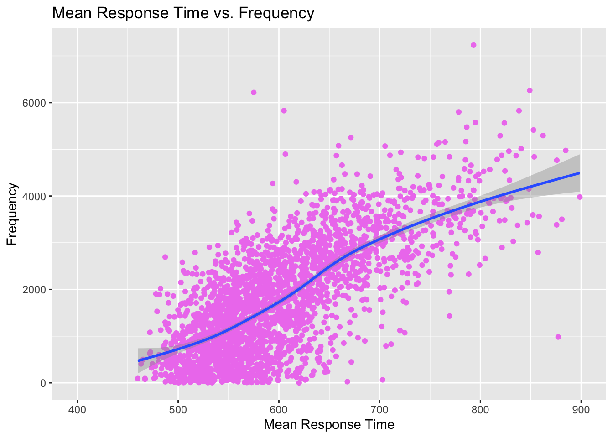

The Mandarin Chinese language, with roots that date back thousands of years, is complex but beautiful language. As a logographic language, Chinese characters represent one of the oldest continuously used systems of writing in the world, and is currently used as a communicative medium by almost one fifth of the world’s population. While other languages using phonetic alphabets have undergone radical changes through time, Mandarin Chinese exhibits remarkable continuity which holds profound meaning and tradition for those who speak it. As a native English speaker and a Chinese language student here at the University of Michigan, I have experienced, first-hand, the difference in cognitive processing of symbolic characters versus alphabetic letters, and the difficulties of learning a logographic language. Given the language’s wide usage, lack of research as compared to alphabetic languages, and connection to my personal and academic journey, it is useful to gain a better understanding of it.
Using a lexical decision task, where participants had to discriminate between real Chinese characters and pseudocharacters via button presses, The “Chinese Lexicon Project” provides a valuable database of behavioral responses (reaction times and accuracy) for lexical processing of single Chinese characters. Through analysis of this study’s lexical processing data, as well as an alternative study’s data on the frequency of Chinese characters, I hope to answer several questions including (1) the relationship between character frequency and lexical decision reaction times, (2) how various lexical properties of characters (e.g., number of strokes, phonetic/semantic radical, number of meanings, etc.) influence lexical decision latencies, (3) the correlation between semantic meaning and response time, and (4) whether or not a character’s tone has any impact on it’s recognizability or lexical decision reaction time.
Importing Data
library(tidyverse)
── Attaching core tidyverse packages ──────────────────────── tidyverse 2.0.0 ──
✔ dplyr 1.1.4 ✔ readr 2.1.5
✔ forcats 1.0.0 ✔ stringr 1.5.1
✔ ggplot2 3.5.0 ✔ tibble 3.2.1
✔ lubridate 1.9.3 ✔ tidyr 1.3.0
✔ purrr 1.0.2
── Conflicts ────────────────────────────────────────── tidyverse_conflicts() ──
✖ dplyr::filter() masks stats::filter()
✖ dplyr::lag() masks stats::lag()
ℹ Use the conflicted package (<http://conflicted.r-lib.org/>) to force all conflicts to become errors
library(ggplot2)clp_raw <-read_csv("/Users/joshliu/Desktop/LING 343/hp2-joshliu17/data/Chinese Lexicon Project Sze et al.csv")
Warning: One or more parsing issues, call `problems()` on your data frame for details,
e.g.:
dat <- vroom(...)
problems(dat)
Rows: 2500 Columns: 7
── Column specification ────────────────────────────────────────────────────────
Delimiter: ","
chr (1): Character
dbl (6): Acc, Ntrials, RT, SE, SD, Z(RT)
ℹ Use `spec()` to retrieve the full column specification for this data.
ℹ Specify the column types or set `show_col_types = FALSE` to quiet this message.
frequency_raw <-read_csv("/Users/joshliu/Desktop/LING 343/hp2-joshliu17/data/Chinese language database _ 中文数据库 - All Characters (Frequency).csv")
Warning: One or more parsing issues, call `problems()` on your data frame for details,
e.g.:
dat <- vroom(...)
problems(dat)
Rows: 9935 Columns: 16
── Column specification ────────────────────────────────────────────────────────
Delimiter: ","
chr (11): ...2, ...4, ...5, ...7, ...9, ...11, ...12, ...13, ...14, ...15, ....
dbl (4): ...3, ...6, ...8, ...10
lgl (1): ...1
ℹ Use `spec()` to retrieve the full column specification for this data.
ℹ Specify the column types or set `show_col_types = FALSE` to quiet this message.
Data Cleanup
Here, I cleaned up the Chinese Language Database (Frequency) dataset to make it easier to interprt. Specifically, the descriptions of the columns were in the first row of the data set rather than being the column names, and the number percentages were written with a comma instead of a period. I renamed the columns, removed unnecessary columns, and replaced the commas with periods.
Below are the Data Dictionaries for both data sets I will be working with.
Chinese Lexicon Project
Variable
Description
Character
the Chinese character in simplified script
Acc
mean accuracy
Ntrials
number of participants whose trials were sufficiently reliable to provide the latencies for that item (maximum being 35)
RT
mean response time for the item, computed across participants
SE
standard error of the response time for each character
SD
Standard deviation of the response time for each character
Chinese Frequency Database
Variable
Description
Frequency
frequency ranking (from highest to lowest)
General_Standard_Num
character’s index number according to the Table of General Standard Chinese Characters, the current standard list of 8,105 Chinese characters published by the government of the People’s Republic of China
Radical
character’s radical, a graphical component of a Chinese character that indicates the character’s meaning or pronunciation
Encounters
number of times the character is encountered in the corpus
Fraction_of_Language
how much of the language is made up by the character; the number of times the character is encountered in the corpus in relation to total amount of Chinese characters
Stroke_Count
number of strokes in the character
Character
Chinese character
Pinyin_Tones
character’s pinyin (romanized spelling for chinese characters) with tone marks
Tone
character’s tone (first through fourth)
Meaning
character’s semantic meaning(s)
Analysis
To investigate the relationship between character frequency and lexical decision reaction times, I have to combine the two datasets (1) containing the lexical decision times, and (2) containing character frequency, using a join.
Next, I decided to creat a regression model to view the correlation between the two variables.
ggplot(combined_data, aes(x = RT, y = Frequency)) +geom_point(col ="violet") +labs(title ="Mean Response Time vs. Frequency",x ="Mean Response Time",y ="Frequency") +xlim(c(400, 900)) +geom_smooth()
`geom_smooth()` using method = 'gam' and formula = 'y ~ s(x, bs = "cs")'
Warning: Removed 12 rows containing non-finite outside the scale range
(`stat_smooth()`).
Warning: Removed 12 rows containing missing values or values outside the scale range
(`geom_point()`).

The regression model above clearly shows a positive relationship between a character’s Mean Response Time and Frequency in the corpus; as a character’s frequency ranking rises, it’s mean response time among participants also increased. This suggests the less frequent a character is, the harder it is to identify it. This is not a novel discovery, but suggests that the study is accurate.